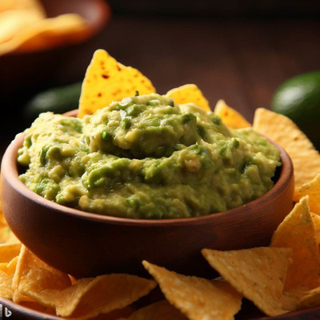

Estas receitas e imagens foram geradas 100% por inteligência artificial
Guacamole com nachos

Ingredientes para o guacamole
2 abacates maduros
1 tomate picado
1/4 de cebola roxa picada
Suco de 1 limão
Coentro picado a gosto
Sal e pimenta a gosto
Ingredientes para os nachos
Tortilhas de milho cortadas em triângulos
Azeite
Sal e pimenta a gosto
Modo de preparo
Guacamole
Corte os abacates ao meio, retire o caroço e coloque a polpa em uma tigela grande.
Com um garfo, amasse os abacates até obter uma consistência cremosa. Se preferir, deixe alguns
pedaços maiores para obter uma textura mais rústica.
Adicione o tomate picado, a cebola roxa picada e o coentro picado à tigela com o abacate.
Esprema o suco de limão sobre os ingredientes na tigela. O suco de limão não apenas adiciona
sabor,
mas também ajuda a evitar que o abacate oxide e escureça rapidamente.
Tempere o guacamole com sal e pimenta a gosto. Misture bem todos os ingredientes até que estejam
bem
combinados.
Prove o guacamole e ajuste o tempero conforme sua preferência. Se desejar um sabor mais picante,
você pode adicionar pimenta vermelha ou pimenta dedo-de-moça picada.
Nachos
Pré-aqueça o forno a 180°C.
Coloque as tortilhas de milho em uma assadeira forrada com papel manteiga.
Pincele as tortilhas com um pouco de azeite e tempere com sal e pimenta a gosto. Você também
pode
adicionar temperos adicionais, como páprica ou pimenta em pó, para dar mais sabor aos nachos.
Asse as tortilhas no forno pré-aquecido por cerca de 10 minutos ou até que fiquem crocantes e
douradas.
Retire os nachos do forno e deixe esfriar um pouco antes de servir.
Montagem
Coloque o guacamole em uma tigela grande ou em um prato de servir.
Disponha os nachos ao redor da tigela de guacamole para que as pessoas possam mergulhar os
nachos no
molho.
Sirva imediatamente e aproveite o delicioso guacamole com nachos!
Esta é uma combinação clássica de sabores frescos e crocantes, perfeita para compartilhar com
amigos
e familiares em ocasiões especiais ou até mesmo como um lanche saboroso em casa. Bom apetite!
Wrap de Atum
1 lata de atum em água, escorrido
2 colheres de sopa de cream cheese
1 cenoura ralada
1/4 de cebola roxa picada
1 colher de sopa de suco de limão
Sal e pimenta a gosto
Tortilhas de trigo ou wraps
Modo de preparo
Em uma tigela, coloque o atum escorrido e desfaça-o em pedaços menores com um garfo.
Adicione o cream cheese ao atum e misture bem até ficar homogêneo.
Rale a cenoura e pique finamente a cebola roxa. Adicione à mistura de atum e cream cheese.
Esprema o suco de limão sobre os ingredientes na tigela.
Tempere com sal e pimenta a gosto. Misture tudo muito bem para combinar os sabores.
Aqueça as tortilhas de trigo ou wraps de acordo com as instruções da embalagem ou até ficarem
levemente aquecidos e maleáveis.
Coloque uma porção da mistura de atum no centro de cada tortilha.
Dobre as bordas da tortilha para dentro e enrole-a firmemente, formando um wrap.
Se desejar, você pode cortar o wrap ao meio na diagonal para servir.
Sirva imediatamente e aproveite o seu wrap de atum!
Sanduíche de Frango com Pesto de Manjericão:
2 filés de peito de frango cozidos e fatiados
4 fatias de pão integral ou pão de sua preferência
Folhas de alface ou rúcula
1 tomate médio, fatiado
4 colheres de sopa de molho pesto de manjericão (comprado pronto ou feito em casa)
Queijo muçarela ou queijo branco, fatiado (opcional)
Sal e pimenta a gosto
Modo de preparo
Cozinhe os filés de peito de frango até estarem totalmente cozidos e suculentos. Tempere com sal,
pimenta e outros temperos de sua preferência antes de cozinhar.
Corte os filés de frango em fatias finas.
Lave e fatie o tomate.
Se desejar, coloque uma camada de queijo muçarela ou queijo branco sobre uma das fatias de pão.
Espalhe o molho pesto de manjericão em uma das faces do pão (a que estiver sem o queijo, se estiver
usando).
Monte o sanduíche colocando as fatias de frango sobre o pesto, seguido das fatias de tomate e das
folhas de alface ou rúcula.
Cubra o sanduíche com a outra fatia de pão.
Pressione levemente o sanduíche para unir todos os ingredientes.
Se quiser, corte o sanduíche ao meio ou em pedaços menores para facilitar o consumo.
Sirva imediatamente ou embale para levar como lanche saudável e gostoso.